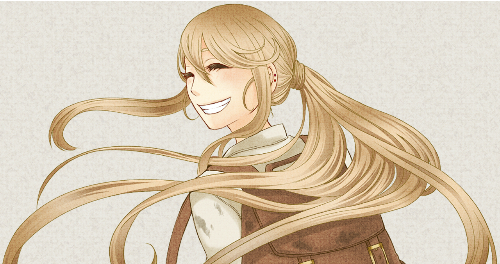

演じるにあたって
２．主要キャラクターのイメージはサイトTOPよりご覧いただけます。
３．サンプルのご送付先は担当者とご決定ください。

性別女性、年齢：６０歳前後
人と魔族の戦争で夫と娘を亡くした未亡人。 10年前に家に訪れた魔族の男から孫娘イーラを受け取る。
そこから一人でイーラを育ててきた。失った娘の代わりにイーラを大切に育てる。
癒えない孤独を抱えるイーラに常に穏やかに接する。
１：孫娘に本を読んでとねだられて本を読む
「ずっと昔の、魔族の王様のお話だよ。どれどれ。昔々、魔族がまだ誕生していない遥か昔、人と神の時代に聖戦が起こりました。
その時代では、「権力と金の神ギルディ」と「愛と慈悲の神イルミア」の信者で世界は二つに分かれていました。」
２：傷ついた魔族を背負った男が家を訪れて
「おやまあ、これは大変。どうぞどうぞ。古い家ですが、使ってくださいな。
・・・人も魔族も、命ある仲間だと、私は思っています。ある人から引き継いだ心だけれどね。」
3：半魔の孫娘が捕まりそうになって
「私は半魔でございます。つい、感情の高ぶりを抑えきれず魔素を放ってしまいましたが、
サイレンの音で心が落ち着きました。じきにサイレンもやむでしょう。すみませんでした。」
4：大切に育ててきた孫娘に旅に出たいと告げられて
「うふふ。そんな日が来ると思ってたさね。・・・あらあら。私も大好きよ。イーラ。」

性別男性、年齢：300歳前後
元魔王軍近衛の傀儡師。人や物に取り憑き操る術を用いた。
終戦直前に魔王の城を抜け出し、記憶を失い人の街の付近で倒れていたところを、
演劇団に拾われて、現在は役者、座長を勤める。
明るく、何事にも挫けない真っ直ぐなお調子者。
１：演劇終わりの出口。帰るお客様に明るく声を掛ける。
「おかえりなさーい！さんきゅーなあ！え？ハグ？それはダメだぜマダム！有料なのさぁ！
でも今日は気分がいいからタダにしちゃうぜぇ！はっはっは！」
２：失った記憶を取り戻せることを知って。
「だからさ、どんなにひどく言われたって、どんなに惨めに扱われたって、全く辛くなかった。俺は、なーんにもなかったから。
・・・でもずっと刺さるんだ。隠してきたつもりだったけどなぁー。」
３：同族の虐殺を受け自暴自棄になっているところ、魔王にぼこぼこにされて。
「げほげほ！・・・助けろよ、助けてくれよ・・・くそ、くそがああああああああ！
許さねえええ！お前が魔王なんだろお！！許さねええ！！！」
４：親友に、腹割いて子供を取り出してくれと頼まれて。
「・・・これ、噛んどけよ。すげーいてーから我慢しろよ。」

性別 女性、年齢 700歳前後
魔王城執務官の呪術師。呪術、屍術に長ける。
魔王城に勤め、城の守護を一任されている。
終戦直前に禁忌の呪い「月の刻印」を使用し、自らの命を絶つ。
仲間思いで几帳面。オレンドとは仲が良く、お姉さんのような存在
１：城の執務中に魔族の仲間が執務室に入ってくる。
「はーい、ってオレンドですか、執務中よ。 ・・・だめ。執務中だから。
うざい。・・・・むり。・・・私あなたのこと嫌いだからだめ。 」
２：魔王城近くの見晴らしの良い崖の上で。
「ヴォルカス様、人族（ひとぞく）の戦艦が見えました。巨大戦艦２０隻、飛行砲台が５０機も見えています。
霧の向こうにはさらに倍近い兵器があると思われます。」
3：魔王にぼこぼこにされた魔族の仲間から、強くなって守ってやる、と言われて
「はぁ。では、その時はお願いしますね。・・・布です。
泥でも涙でも、好きなものを拭いてください。魔王城でお待ちしています。」
4：死の直前、サラを裏切り者にはさせない、と言われて腹を刺された後に。
「・・・そう。ふふふ・・・。ヴォルカス様になんて言い訳してもらおうかしら。」

性別 女性、年齢 22歳前後
幼い頃から冒険が大好きな探検家。
10歳を過ぎた頃から世界のあちこちを飛び回る破天荒な女性。
古代文明の遺物が大好きで、新たな遺物を求めて魔大陸にまで訪れる。
快活で臆さない、非常に活発な性格をしている。
１：魔族の友達と一緒に穴へ落ち、懐中電灯をつけた後に
「はいはい、で、ここは・・・わ、わーー！ねぇ！オレンドみて！地底湖よ！ここ！すっごい広い地底湖！！」
２：魔大陸到着後、魔族に群がられて
「うおりゃあああああああ！どっっっかあああん！・・・ああもう！しつこい！！てええりゃああああああ！どっっっかあああん・・・
はあ、はあ！あんたたちねえ！私は探検に来ただけなのに！なあんで食ってかかってくるのよ！邪魔しないで！」３：死後、娘に宛てた手紙、回想シーン
「あなたがやりたいことたっくさんして、たっくさん笑って！
・・・ママね、あなたと、ヴォルカスと一緒に、魔王城から朝日をみたかったなぁって今１番思うことなのよ。
・・・さて！あなたの行きたい場所へ向かいなさい！旅立ちに臆すことなく！ヴォルカスがあなたのことをきっと見守ってくれるわ。
いけ！若者よ！母は応援しているぞー！わっはっはー！あなたの母、ロクシーより。」
４：自分の腹を割くことを親友の魔族へお願いし、抵抗する彼に対して
「・・・わがままばっかりでごめんね。最後の、最後のお願いだから。」
性別 女性、年齢 27歳前後
大陸を移動しながら公演を行う演劇旅団の主演女優。
心と柔軟さ、面倒見の良さを持つ美しい女性。
ちゃらんぽらんな座長のことを補佐する苦労人でもある。
劇団座長のどんな時でも常に明るく振る舞う心の強さに惹かれている。
１：練習すっぽかしていなくなった座長を見つけて
「はいはい。練習すっぽかしてどこに行ったかと思ったら・・・こちらの方々はどなたですか？」
２：失った座長の記憶を戻すことができる可能性を知って
「だから、たとえ私より好きな人がそこにいても、構いません。ヴェルさん、オレンドの記憶を戻すことができますか？」
３：飲み会のお立ち台の上で、グラスを片手に踊っているシャンディ
「あっははは！踊りはね、腰をこう、こうするのよ！うっふふふ！ほら！お酌が欲しい人は私のことを褒めなさーい！さぁー！！」
※場面を確認される方は現在未公開台本につきこちらよりご参考下さい
４：支えてきた劇団座長からプロポーズをされて（それまで座長は半魔だったため結婚は思いとどまっていた）
「・・・私も・・・私もオレンドのことが一番好き。
・・・よろしくお願いします。・・・でも、プロポーズするなら、もっとなんか、ロマンチックな感じにして欲しかったわ・・・ふふふ。」